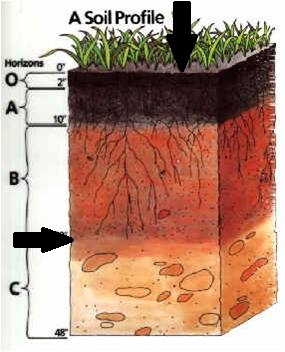
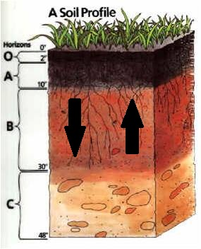

Procesos formadores del suelo
Durante su formación, en el suelo ocurren entradas y salidas, movimientos y trasformaciones de materiales y energía. A estos eventos se le denomina procesos formadores del suelo. Los principales procesos formadores del suelo son:
Adiciones
Son entradas de materiales y energía al pedón. Ejemplos de adiciones son la entrada de agua de las lluvias o el riego, de radiación emitida por el sol, de sedimentos proveniente de la erosión de suelos aledaños o bien de fertilizantes
Pérdidas
Son salidas de materiales y energía del pedón. Ejemplos de pérdidas son la erosión, la evaporación del agua y la emisión de calor a la atmósfera o su transferencia a suelos aledaños

Transformaciones
Son transformaciones de la materia, cambios o reacciones químicas que ocurren dentro del pedón. Ejemplos de ello son las reacciones transformaciones de la materia, de formación de humus, arcillas, la oxidación, reducción, hidratación y precipitación de compuestos entre otros.
Translocaciones
Son movimientos de materiales de un lugar a otro, u horizonte a otro, en setido descendente o ascendente dentro del pedón. Sin salir de él. Ejemplos de ello son la eluviación e iluviación de arcillas, o el lavado de compuestos solubles del horizonte A al B y visceversa.
- «
- »